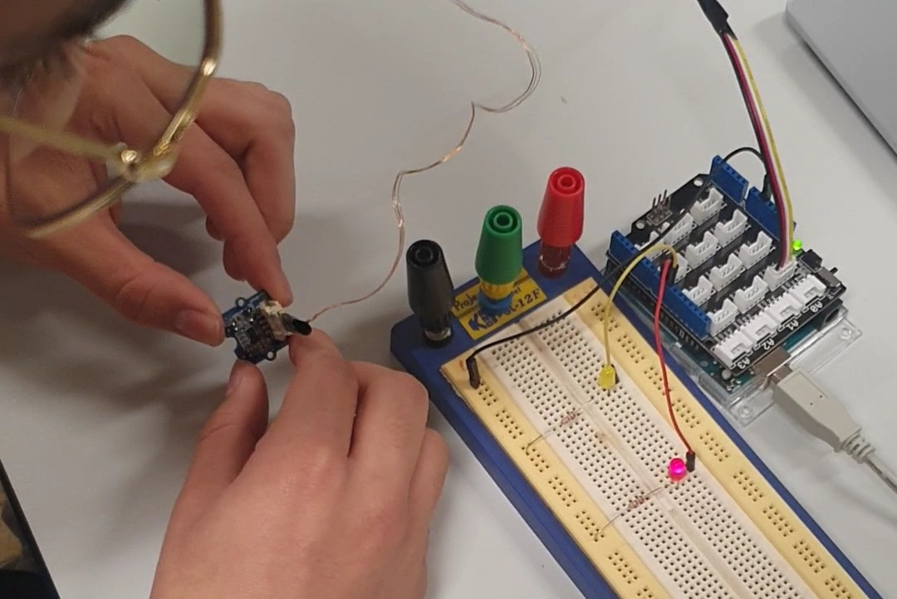

Stabilisation des drones par asservissement
Étude théorique, conception, filtrage de données et asservissement PID, analyse et traitement des données permettant de comprendre et mettre en œuvre la stabilisation des drones face aux perturbations.
Introduction
Ce projet s'inscrit dans le cadre du Travail d'Initiative Personnelle Encadré (TIPE), réalisé en classe préparatoire scientifique. Le thème pour l'année 2024/2025 était Transformation, Transition et Conversion. Les systèmes gyroscopiques des drones, essentiels à leur stabilité, s'inscrivent dans cette dynamique en convertissant les variations de mouvements physiques en signaux électriques exploitables. De plus, les drones ont amorcé une véritable transition dans les modes de transport de marchandises, notamment pour la livraison de colis et de médicaments.
Pourquoi ?
Lors de mon projet de fin de Terminale, dont l'objectif était de concevoir un drone de transport, j'ai été confronté à d'importants problèmes de stabilisation qui ont empêché l'aboutissement du projet. Ne souhaitant pas rester sur un échec, j'ai décidé d'approfondir l'étude de la stabilisation des aéronefs.

Les débuts du projet
Initialement, je souhaitais créer un quadrirotor complet. Cependant, afin de rester concentré sur mon objectif principal — l'étude de la stabilisation — et ne pas m'éparpiller sur la radiocommande, la transmission ou le châssis, j'ai choisi de me limiter à une maquette mono-axe.
L'objectif est de stabiliser un axe doté d'un moteur à chaque extrémité : lorsqu'il subit une perturbation, le système doit corriger son inclinaison de manière autonome pour revenir à l'horizontale.

Expérience permettant de comprendre le fonctionnement des gyroscopes via une première mise en œuvre : la luminosité de la LED varie en fonction de l'inclinaison du capteur.
Les complications rencontrées
Avant d'aborder la théorie et le code, la conception mécanique a posé plusieurs défis. L'axe initial, en métal, s'est avéré trop lourd pour les moteurs disponibles. Je l'ai donc remplacé par une équerre en plastique, beaucoup plus légère. Cependant, cette solution a généré un nouveau problème : d'importantes vibrations rendaient les données inexploitables. Il a donc fallu implémenter des filtres (mécaniques et électroniques), en plus de résoudre divers problèmes liés au matériel, au déséquilibre et à l'alimentation électrique.
.jpg)

Les solutions apportées
Pour atténuer les vibrations, j'ai d'abord rigidifié l'axe en plastique pour réduire sa malléabilité. Ayant remarqué qu'une compression des moteurs diminuait les vibrations, j'ai modélisé et imprimé en 3D des pièces sur mesure permettant à la fois de les maintenir fermement et de servir de supports.
Malgré ces améliorations mécaniques, la mise en place d'un filtre numérique s'est avérée indispensable. Bien que j'aie initialement envisagé un filtre de Kalman, j'ai opté pour un filtre passe-bas du premier ordre afin de rester en adéquation avec les attendus du programme de la filière TSI. Les résultats obtenus se sont révélés très concluants.

Conclusion
Ce projet m'a permis de confronter l'étude théorique à la réalité pratique. J'ai pu constater que les modèles mathématiques présentent des limites face aux contraintes physiques réelles, exigeant une forte capacité d'adaptation. Si le choix du matériel est déterminant, c'est l'optimisation de la chaîne d'acquisition (filtrage) et de la régulation qui garantit véritablement la stabilité et la fiabilité du système.
Support de présentation
Consultez le diaporama du projet ci-dessous pour y trouver davantage de détails.